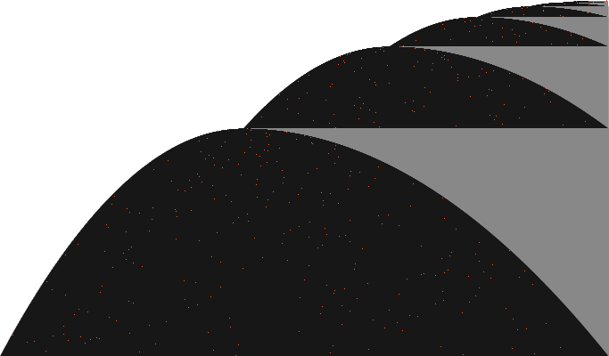

연구 노트 · 2026년 10월 20일
멈추는 작은 기계는 얼마나 오래 일할 수 있을까. 기계를 직접 한 걸음씩 돌려 보면서, 1,400만 개를 무작위로 시험한 결과까지 따라가 봅니다.
요약
칸이 끝없이 이어진 테이프가 있고, 그 위에서 헤드 하나가 한 칸씩 움직입니다. 헤드는 지금 자기 상태(A, B, …)와 발밑 칸의 기호를 보고, 규칙표에서 딱 한 줄을 골라 따라요.
표기법1RB = 1을 쓰고, 오른쪽(R)으로 한 칸, 상태 B로.1RZ의 Z는 멈춤.
여섯 걸음 만에 멈추죠. 상태가 2개인 기계 중에 멈추면서 이보다 오래 일하는 기계는 없습니다. 그래서 BB(2) = 6이에요.
매 걸음의 테이프를 한 줄로 찍고, 위에서 아래로 쌓으면 기계의 일생이 한 장의 그림이 됩니다. 이런 그림을 시공간 다이어그램이라고 불러요. 기계를 바꿔 가며 눌러 보세요.
한 줄 = 한 순간의 테이프. 주황 칸이 그때 헤드가 있던 자리예요.
상태가 5개만 돼도 이야기가 완전히 달라집니다. BB(5) 챔피언은 47,176,870걸음을 일하고 멈춰요. 같은 방식으로 그리면 아래처럼 됩니다.

1RB1LC_1RC1RB_1RD0LE_1LA1LD_1RZ0LA의 실행 전체. 테이프 폭이 12,289칸까지 넓어졌다가 멈춥니다. 다음 장의 시뮬레이터에서 직접 끝까지 돌려 볼 수 있어요.